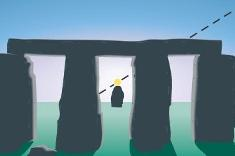

ASTR 1210 (O'Connell) Study Guide
5. ANCIENT ASTRONOMY
Maya pyramid El Castillo at Chichen
Itza
(Catherwood, ca. 1844)
|
"A single lifetime, even though entirely devoted to the sky, would not
be enough for the investigation of so vast a subject...And so
this knowledge will be unfolded only through long successive
ages. There will come a time when our descendants will be amazed
that we did not know things that are so plain to them...Many
discoveries are reserved for ages still to come, when memory of
us will have been effaced."
|
Introduction to the History of Astronomy
The quote above, by Roman philosopher Seneca the Younger, from ca. 50 AD, is characteristic of the views of the most far-sighted thinkers of ancient Greece and Rome. They knew that, for all of the important discoveries about the sky that had already been made (as described in Study Guide 6), they had barely scratched the surface of understanding the sky and its denizens. Seneca was right about the length of time it would take to achieve a more complete understanding of the cosmos. We've presented a quick overview of our modern understanding in earlier Study Guides, but most of that was accomplished only in the last century -- almost 2000 years after Seneca speculated about future discoveries. That's a measure of the difficulty in penetrating the complexity of the universe and of overcoming the limitations of our own inadequate human intuition and our pre-conceptions about what we might find. The "things that are so plain" to us today but would have been almost incomprehensible in earlier times extend well beyond astronomy to encompass all of modern science and technology. In the next few class meetings, we explore the historical record of progress toward understanding the sky, which began in pre-literate societies over 5000 years ago.Introduction to Ancient Astronomy
Evidence from ancient societies that left interpretable artifacts shows that many took astronomy very seriously, to the extent of including precise astronomical alignments in their buildings and ceremonial structures. In this lecture we discuss some of the ways early societies made and recorded observations of the Sun, Moon, planets, and stars. Then, we explore two of the most dramatic examples of ancient astronomy.-
Stonehenge, the striking arrangement of massive stone monoliths
in southern England from before 1500 BC, encodes astronomical
knowledge, but its builders left no written records, so we have no
idea how they acquired that or how they perceived the universe around
them.
By contrast, the Mesoamerican cultures that flourished in Mexico and
Guatemala between about 500 BC and 1500 AD not only documented
extensive and painstaking observations of the sky, but they also left
records of a fascinating, pre-scientific cosmology built on those.
Their vibrant, if violent, view of the cosmos is beautifully captured
in the so-called
"Aztec Calendar Stone". The
Mesoamerican Maya culture is an amazing example of great
accomplishments in astronomy conjoined with ferocious societal
behavior.
A. Motions of the Planets on the Sky
A conspicuous feature of the naked-eye sky in the planetarium simulations shown in Lecture 4 was the motion of the five bright planets. Although not as fast as the diurnal, solar, and lunar motions, the planetary motions are considerably more complex and placed greater demands on the abilities of ancient astronomers.-
[Recall that these
"motions" are measured by observers on Earth with respect to
the background patterns of the stars on the sky.]
- The speed of the motions depends on the planet, decreasing from rapid to slow in the order: Mercury, Venus, Mars, Jupiter, Saturn.
- The general (average) motion of the planets against the star background is eastward in the sky.
- Mercury and Venus never move very far from the Sun (48 degrees in the case of Venus) and appear to move back and forth in front of/behind it.
- At least once per year, each of the planets halts its eastward motion and loops backward for a brief period before starting to move eastward again. This backward loop is called retrograde motion.
- The planets are confined to a relatively narrow band on the sky that is roughly centered on the ecliptic, the annual track of the Sun. The planets therefore are always to be found in the 12 Zodiacal constellations.
- The extreme north/south positions (i.e. distance from the
celestial equator) of the Sun, Moon, and planets differ from one
another.
- We now know that these differences are determined by the inclinations of the orbital planes of the planets and Moon to the ecliptic plane.
- The Sun moves along the ecliptic, so its maximal N/S positions are 23.5 degrees from the equator, as described in Guide 04.
- The Moon's orbit is inclined 5 degrees to the ecliptic, so its maximal N/S positions are 28.5 degrees from the equator. 5 degrees may sound small, but it is 10 times the angular diameter of the Moon, so it is easy to distinguish on the sky.
- The orbit of each planet has a different inclination with respect to the ecliptic. A planet's observed N/S extremes are affected both by its orbital inclination and its distance from the Earth.
B. Astronomical Measurements Without Instruments
The most elaborate astronomical instruments prior to the advent of telescopes were made out of metal and wood. However, even societies that lacked metalworking skills could make reasonably careful astronomical observations using other kinds of technologies, some of which we explain next:- Heliacal risings: Helios is the Greek
word for the Sun. Stars are said to exhibit "heliacal risings" if
they rise in the east just before the Sun. An illustration is
shown here. This is a
(rough) method of tracking the Sun's changing position with respect to
the stars. Recall that the Sun moves about 1 degree east every
day against the stars. Hence this is a date-keeping method.
For example, in ancient Egypt a heliacal rising of the brightest star,
Sirius, was used to forecast the Nile's annual flood. The method can
only be used for stars bright enough to be visible in the twilight
sky.
A modern example of a horizon intercept - Horizon intercepts: The alignment of a
rising/setting object with distinct features on the distant
horizon as seen from a special location is called a "horizon
intercept." An illustration is shown above. Horizon intercepts allow
one to track the date using the N/S position of the
setting/rising Sun against the horizon (more accurate than using
heliacal risings). It also allows tracking of the motions of the
Moon and planets and, in particular, the extremes of their
north/south motions. The horizon is a convenient reference plane for
tracking celestial objects; it is harder to provide alignment devices
that track objects when they are high in the sky.
-
Note: accurate Earth-sky angular measurements of this kind require
establishment of a reference direction. For instance, two
fixed points yielding a well-defined fixed line toward the horizon is
a reference against which to measure anglular positions of intercepts.
The two points could both be natural (e.g. a nearby rock and a
tree on the distant horizon) or they could both
be artificial --- the foreground road in the Moon image above,
for example. The most sophisticated of the artificial reference
systems were actually embedded into ancient buildings.
- Internal building alignments. Special designs, intended
to assist in making astronomical measurements or to reflect a
recurring important astronomical event (e.g. an equinox or solstice),
have been found built into many ancient buildings. Discovery and
analysis of such features is an important aspect of a new research
field:
"Archaeo-Astronomy" (see ASTR
3410).
Many ancient building alignments were intended to mark the rise or
set (i.e. the horizon intercepts) of important astronomical
objects. Some examples:
- The Sun at the equinoxes (east-west alignment). For
example, most ancient Greek temples have their long axes aligned
east-west, so that the rising or setting Sun illuminates the
interiors. The bases of the Egyptian pyramids are aligned almost
exactly east-west/north-south, in the case of the
Great
Pyramid of Khufu within 3 minutes of arc (1/20 of a degree).
-
The "El Castillo" pyramid, built by the Maya at Chichen Itza ca 950
AD, is not closely aligned E-W/N-S, but it features raised staircases
against which a rippled shadow is cast by the edges of the pyramid
at sunset near the equinoxes. See the image at the right. As the sun
sets, the shadow moves and is said to resemble the slithering of the
feathered
serpent deity Kukulkan, to whom the temple is dedicated.
- The Sun at a solstice (its extreme N/S positions). The rise/set points of the solstices do not lie east-west, because the Sun is 23.5 degrees from the celestial equator at these times. E.g. at Stonehenge, the line of sight from the center of the monument towards "The Avenue" and "Heelstone" points toward the rising Sun on the summer solstice. A number of structures, e.g. Newgrange in Ireland (ca. 3200 BC), are oriented toward sunrise at the winter solstice (shortest day the year).
- The Moon at its N/S extremes (28.5 degrees from the celestial equator): e.g. at Stonehenge, the line of sight over two pairs of special stones point toward Moon rise or set at the extremes. For details on the complex motions of the Moon, see Lunar Motions and Their Consequences.
- Bright stars. The rise/set points of stars are always the same during a given year, but they do change very slowly over time because of "precession" of the Earth's polar axis. Corrections for precession based on the date of a given ancient structure must be made before possible sight lines to stars can be explored. Examples of significant stellar alignments with megalithic structures include Nabta Playa in southern Egypt, from ca. 6000 BC.
- Planets at their N/S extremes: e.g. the Maya El Caracol observatory building contains alignments of windows and wall structures with special setting points of Venus on the western horizon.
- The Sun at the equinoxes (east-west alignment). For
example, most ancient Greek temples have their long axes aligned
east-west, so that the rising or setting Sun illuminates the
interiors. The bases of the Egyptian pyramids are aligned almost
exactly east-west/north-south, in the case of the
Great
Pyramid of Khufu within 3 minutes of arc (1/20 of a degree).
{kind=link}
{kind=link}
{kind=link}
C. Astronomical Records
Recording of observations/interpretations is the key to scientific progress.{kind=link}
-
Although pre-literate societies were able to transmit some scientific
information via oral histories and recitation, they rarely progressed
far in understanding the world. They had a faulty record of their own
histories, let alone nature. Even crude methods of recording data
provide enormous advantages. Paradoxically, low-tech stone records
survive better than more elaborate paper records.
The first writing systems were developed ca. 3200 BC in the Near East
(Sumeria and Egypt) and were used mainly to record imperial and
dynastic histories or commercial transactions.
The earliest extant astronomical records (Chinese) are over 4500
years old. The best astronomical records prior to the European
Renaissance were developed by the Babylonians, Greeks, Chinese, and
Maya. At right is a Babylonian planetary almanac written in "cuneiform"
script (ca. 400 BC). The script was incised on a wet clay tablet which
was then fired to make a permanent record. The surviving Maya records
(both carved in stone and written in ink; see below) reveal
sophisticated observational capabilities.
It is difficult for people today, for some of whom time is measured in
minutes elapsed between text messages, to picture the gulf in time
over which human civilizations developed. Written records of any
kind are sparse before about 500 BC. The earliest extensive, coherent
histories were written by the ancient Greek
historians Herodotus
and Thucydides
around 430 BC. For a little context, consider this: when Herodotus
visited and described
the
Great Pyramid of Khufu in Egypt ca. 450
BC, he was already as distant in time from its construction as we are
today from the reign of Julius Caesar.
{kind=link}
Stonehenge by moonlight
D. Stonehenge
Stonehenge, on the Salisbury plain in south-central England, is the best known of thousands of "megalithic" ("giant stone") monuments surviving from prehistoric times (roughly 3500-500 BC) in northern Europe. (Click on the thumbnail at right for information on megalithic sites in Great Britain and Ireland.) These consist mainly of standing stones, dirt mounds and ditches, and evidence of former wooden structures, now long decayed. Four examples are shown here. Very little is known about the peoples who built these. Unlike the Maya or the Middle Eastern cultures, they did not incise their hard stone surfaces with symbols or writing, and they left no other records of any kind. Consequently, scholarly debate has raged over the purpose of such structures. There is, however, good evidence that their builders incorporated astronomical knowledge of the Sun, Moon, and bright stars in some of them. That includes Stonehenge, which is probably the best-studied ancient structure in terms of its astronomical alignments and significance.{kind=link}
{kind=link}
Construction at Stonehenge took place ca. 3100-1500 BC (over 1500 years!) in several major phases. This was a massive effort, involving, for instance, transport of specially-selected 5 ton stones up to 240 miles. The image above shows Stonehenge as it might have appeared in the period 2000-1550 BC.
-
To put Stonehenge in its historical context,
here is a timeline
showing other contemporaneous cultural developments. The construction
of Stonehenge started about 500 years before the Egyptians began
building pyramids, but the Stonehenge people never reached the
level of sophistication of the Egyptians.
{kind=link}
{kind=link}
{kind=link}
{kind=link}
{kind=link}
- Solsticial Alignments: A line from the
monument center to the "Heelstone" points toward the location
of sunrise at the summer solstice (the northernmost sunrise of
the year and the longest day of the year). The reverse points to
sunset at the winter solstice (southernmost sunset). The Heelstone is
a large, isolated stone lying outside the circular structures on the
centerline of the Avenue.
[Click on the
thumbnail at right for a chart of the alignments.]
-
Note that such "solsticial" orientations are not simply
east-west (which is much more common in ancient buildings).
The heelstone is north-east of the center of
Stonehenge.
A sketch of the Sun's path as it rises over the heelstone on the
summer solstice as seen from the center is shown below. The stone is
placed slightly south of the actual "horizon intercept," presumably
because one cannot mark that point with a large standing stone and
still see the Sun there.
 - Lunar Alignments: The so-called
"Station Stones" are four stones lying just inside the circular bank
(labeled "SS" in the plan
drawing). Lines drawn through Station Stones 92 and 93 or 91 and
94
align with the N/S
maxima of the Moon's rise or set during the
18.6-year revolution
cycle in the "nodes" of its orbit.
-
The nodal cycle determines where on the sky the N/S maxima will
occur and also controls the pattern of lunar and solar eclipses.
(See Lunar Motions and Their
Consequences.)
Diodorus, a Greek historian during the 1st century BC, refers to
a "19 year" cycle traditionally associated with Stonehenge and
the Moon --- almost certainly the lunar nodal cycle.
Astronomers Gerald Hawkins, in his best-seller "Stonehenge
Decoded," and Fred Hoyle suggested in the 1960's that the circle
of 56 "Aubrey Holes" (dug at the inner periphery of the circular
mound) could have been used as an analog computer to track the motion
of the Moon, Sun, and the nodes of the lunar orbit in order to predict
eclipses. 56 years, or 3 nodal cycles, is required to bring solar
eclipses back to approximately the same locations on Earth's surface.
Though technically correct, this idea has found little support among
archaeologists.
{kind=link}
{kind=link}

E. Maya Astronomy
The Maya were the most advanced ancient astronomers in the Western hemisphere. They represented the pinnacle of a 2000-year "Mesoamerican" cultural tradition, preceded by the Olmecs and Zapotecs and succeeded by the Toltecs and Aztecs. The Maya flourished 250-900 AD in the area now belonging to Mexico, Guatemala, Honduras, and Belize. They built many elaborate cities, including large pyramidal and other public & ceremonial buildings. Maya societies had a harsh, militaristic character, and city-states frequently waged war on one another. The civilization suddenly disintegrated beginning ca. 850 AD.{kind=link}
- The reason for
the collapse
of the Maya civilization still isn't understood well. The
main symptom was that the people abandoned most of their cities and
spread out through the forests to live in small villages. They stayed
that way for hundreds of years. Something similar happened ca. 1200
BC, at
the end
of the Bronze Age in the Eastern Mediterranean, when a dozen
different, formerly interdependent, cultures (including the Mycenaean,
Minoan, and Hittite empires) precipitously declined. The subsequent
400 years in Greece became known as the "Greek Dark Ages," when
literacy vanished.
A number of problems could have contributed to these collapses:
drought or other environmental pressures, overpopulation, disease,
invasion, or political instability. Definitive causes have not yet
been identified. Probably a confluence of adverse natural and human
factors was at fault in both cases.
The Maya collapse was some 600 years before the arrival of the
Spanish explorers (ca. 1520 AD) and had nothing to do with military
conquest by Europeans.
"eyeing" the cosmos. Click for more images of the Codex.
Maya Observations, Sky Cycles and Calendars
|
Chichen Itza Today Astronomical Tables in |
{kind=link}
{kind=link}
{kind=link}
- Venus was believed to be a malevolent god, whose demands for blood sacrifice at critical times led to ritual murder by the Maya of both captives and their own citizens, including children. (The Toltecs and Aztecs, who became dominant after the Maya collapse, were even more enthusiastic participants in human sacrifice.) The Maya assiduously tracked Venus to forecast the god's intent toward themselves.
- But there is no evidence the Maya understood the origin of the celestial motions, which they attributed entirely to supernatural volition.
- From the standpoint of astronomy, there is an unpleasantly
sinister aspect to this. The astronomers, or "daykeepers," were so
good at making observations that it's inconceivable they hadn't
realized that the celestial cycles of the Moon and Venus
were strictly repeatable. And the more cycles they recorded,
the more confident they could be about it. In other words, they knew
that human intervention made no difference to the motions in the sky.
The astronomers must have colluded with the political and religious
leaders in pretending that the sacrificial rituals were effective.
-
There is a hint of this in the movie Apocalypto. At the start
of the ostensibly terrifying solar eclipse, two priests exchange a
knowing glance. They knew it was coming all along.
{kind=link}
Uxmal, Maya city ca. 850 AD, with the Pyramid of the Magician at the left
The Long Count and the End of the World
-
The Maya believed in a recurring cosmic cycle of birth and
destruction during which the gods struggled to nurture a fruitful human
species. Three cycles, each ending in catastrophe for the world, were
thought to have preceded the then-current, fourth, cycle. The cycles
as interpreted by the (later) Aztecs are described
here.
Time within a cycle was tracked by the Long Count, in which
each day was assigned a unique number. Counts were expressed in a
modified base-20 system, the longest unit of which was
the baktun. A baktun is 20x18x20x20 = 144,000 days
or 394 solar years long.
Here is an example of
an inscription giving a date in the long count calendar.
Some Maya documents suggest that a
cosmic creation cycle would end in worldwide disaster after
exactly 13 baktuns, or 5125 years.
By cross-correlating Long Count dates with unique astronomical events
and historical dates after the Spanish conquest, archaeologists have
been able to convert Long Count dates to those in the Julian (Western)
calendar. The starting date of the fourth cycle (and the end
of the third) was determined to be 11 August 3114 BC. But that
implies that the end of the fourth cycle occurred on
21 December
2012!
You can find much speculation on the Internet before December 2012
about the meaning of the cycle turnover, including irresponsible
predictions of a looming
Doomsday. A handy "countdown to the apocalypse" calendar
is shown at the right. The predictions were nonsense, and there was,
obviously, no catastrophe at the predicted time. The doomsday
hucksters have since retreated into silence to count their money.
Remember that for all their skill in tracking the planets, the Maya
world view was riddled with superstition, and they showed no insight
regarding the true physical nature of the universe or even the size
and shape of the Earth. They had counting systems but had not
developed mathematical geometry, which would have helped them
understand the nature of sky cycles. Their writings were vague and
contradictory concerning the cosmic cycles, and some inscriptions
anticipate eras as much as 2020 years from now in an
inconceivably distant future. Finally, as is obvious from the
historical record, there was no worldwide cataclysm in 3114 BC, at the
end of the previous 13-baktun cycle. Same with 2012, and we have now
started the first baktun of a new cycle.
{kind=link}
{kind=link}
 Below are examples of a Maya observatory ("El
Caracol" at Chichen Itza, left) and the remarkable Aztec "Sunstone"
calendar, carved in 1479 (right). Click on thumbnails for more
images and an explanation of the Sunstone.
Below are examples of a Maya observatory ("El
Caracol" at Chichen Itza, left) and the remarkable Aztec "Sunstone"
calendar, carved in 1479 (right). Click on thumbnails for more
images and an explanation of the Sunstone.
Parallel Cultural Development
Mesoamerican culture developed in isolation from the world outside the Americas, and there was no contact with Eurasian cultures before Columbus arrived in 1492 AD. Maya pyramids and glyph writing resembled their Egyptian counterparts, but they had developed completely independently and in parallel and delayed by about 2500 years. However, the Maya easily exceeded the astronomical accomplishments of almost all the Eurasian civilizations at a comparable level of development. It is something of a shock to realize that for all their sophistication, the Maya, as well as all the other indigeneous groups of the Americas, were literally Stone Age people. They did not make extensive use of metals: for instance, they never developed bronze weaponry. They did not use the wheel for travel, commerce, or the military. When Hernan Cortes and his Spanish Conquistadors landed on the eastern shore of Mexico in 1519, he was facing a determined, warlike society -- but one of a kind that hadn't existed in Europe or Asia for over 4000 years. The result was rapid capitulation of the Aztec capital Tenochtitlan (now Mexico City) and the subjugation of the rest of the Mesoamerican empires over the next several decades. The same fate befell the even larger Inca Empire in western South America by 1572.Reading for this lecture:
-
Bennett textbook: 3.1 (ancient astronomy)
Study Guide 5
Lunar Motions and Their Consequences
The Aztec Calendar Stone
Optional references on Stonehenge: see Gerald Hawkins,
Stonehenge Decoded (1966) or John North, Stonehenge: A New
Interpretation of Prehistoric Man and the Cosmos (1996).
Optional reference on Maya astronomy:
Skywatchers of
Ancient Mexico by Anthony F. Aveni (Univ. of Texas Press,
1980/97).
Puzzlah Preparation Questions
-
Bennett textbook: Ch. 3.2
Study Guide 6
Optional references: Bertrand Russell, A History of Western
Philosophy; Arthur Koestler, The Sleepwalkers; Timothy
Ferris, Coming of Age in the Milky Way; J. L. E. Dreyer,
A History of Astronomy from Thales to Kepler.
Puzzlah prep:
- A (the lighter object) hits the ground first.
- B (the heavier object) hits the ground first.
- They hit at the same time.
-
You have two objects, A and B, both of which are the same shape.
B weighs twice as much as A. You drop both simultaneously
from a height of 3 feet. What happens?
Web links:
-
Slides shown in lecture (pptx)
Introduction to
Archaeoastronomy (UMd)
Astronomy of the Egyptian Great Pyramid
Stonehenge:
-
Introduction
to Stonehenge.Some of the illustrations above are taken from this
site.
Stonehenge Factsheet from the Royal Astronomical Society
Stonehenge (Wikipedia)
Murder at Stonehenge (segment in the "Secrets of the Dead" PBS series).
Animated 3-D Model of Stonehenge
Excavations at the Stonehenge complex (Jan 2007)
Virtual Tour of Stonehenge (English Heritage)
-
MesoWeb (good general site)
MesoAmerica Photos & Articles (Jacobs)
Photos of Maya Cities (McKenzie)
Photos of Maya Cities and comparisons to Catherwood's discovery paintings (Frogel) Introduction to Maya Astronomy
The Maya Calendar (Wikipedia)
The Maya Calendar (Meyer)
Brief notes on the Maya calendar (Chevalier, UVa ASTR 3410)
Astronomical Contents of the Dresden Codex (Boehm)
Breaking the Maya Code (Coe). Describes how misconceptions delayed interpretation of the Maya inscriptions for decades.
El Caracol, A Maya Observatory (O'Connell) Evidence that a massive drought caused the Maya collapse (2018) The Aztec Calendar Stone (O'Connell) "The Great 2012 Doomsday Scare" (E. C. Krupp)
Debunking the "2012 Doomsday". A site injecting science and common sense into the
overheated Internet rhetoric about the "predicted" end of the world on 12/21/2012. Maya Culture on the big screen: Mel Gibson's Apocalypto
-
Trailer
Wikipedia entry (summary, sources, criticism)
"History Buffs" Episode (extracts, historical assessment)
 Previous Guide
Previous Guide
|
 Guide Index
Guide Index
|
Next Guide |